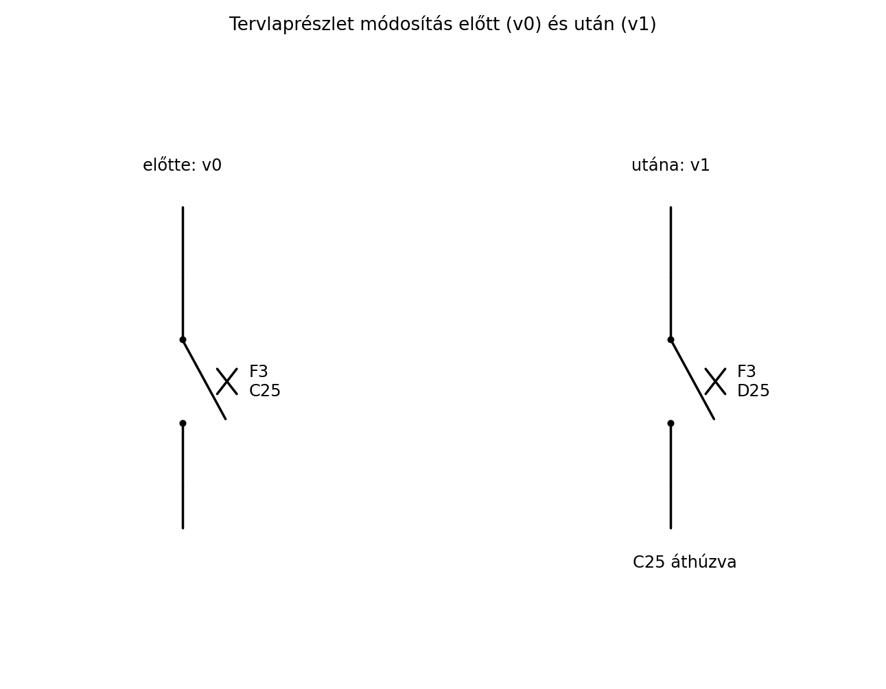

Statikus változat (mint a PDF-ben)
Egy villanyszerelő sokszor egyedül készít el egy elosztót, egy motorvezérlést vagy egy teljes lakáshálózatot. A munka végeztével azonban nem elég, hogy a berendezés működik: a következő szerelőnek, a felülvizsgálónak, a karbantartónak és a megrendelőnek is értenie kell, mit lát. A dokumentáció nélküli berendezés olyan, mint egy könyv tartalomjegyzék és oldalszámok nélkül: lehet benne keresni, de drága és balesetveszélyes. A rosszul feliratozott kismegszakító vagy a hiányzó kapcsolási rajz miatt a hibakeresés órákig tarthat, egy tévesen feltételezett bekötés pedig komoly baleset forrása lehet.
Motiváló helyzet. Egy társasház lépcsőházi elosztójában időrelé hibát kell keresni. A régi szerelő nem hagyott rajzot, a vezetékek színe vegyes, a sorkapcsokon nincs felirat. A hibakeresés három órát vesz igénybe, mert a szerelő minden áramkört feszültségmentesítés után kézzel követ végig. Ugyanez a munka friss, pontos dokumentációval kb. fél óra lett volna.
Definíció. A szerelési dokumentáció azoknak a rajzoknak, jegyzékeknek, utasításoknak és jegyzőkönyveknek az összessége, amelyek leírják egy villamos berendezés felépítését, bekötését, működését, valamint az üzembe helyezés, ellenőrzés és karbantartás során végzett munkákat.
A gyakorlatban a következő elemeket kell megkülönböztetni:
Összefüggés. A tervező kapcsolási és elrendezési rajzaiból dolgozik a szerelő; a szerelés közbeni változásokat ezekre vezeti rá, így áll elő a kiviteli (megvalósulási) dokumentáció. A feliratok a rajzok jelöléseire utalnak, a kezelési utasítás pedig a feliratokhoz kapcsolódik. Ha bármelyik hiányzik, a lánc megszakad.
Feliratozás a gyakorlatban. A feliratokat nem kézzel írt filccel, hanem tartós, kopásálló jelölőkkel készítjük. Az alábbi ábrán a hat leggyakoribb eszköz látható: az 1 karakterenként rápattintható jelölőgyűrű és a 2 nyomtatott jelölőhüvely az érvégre kerül (még a csupaszolás és az érvéghüvely felhelyezése előtt); a 3 kábeljelölő zászlót kötegelővel a kábel köpenyére rögzítjük, a kábel mindkét végén ugyanazzal a jellel; a 4 sorkapocs-jelölés csoportjelből (-X1) és kapocssorszámból áll; az 5 készülékcímke a készüléken és mellette, a szerelőlemezen vagy a kábelcsatorna fedelén is ott van, hogy készülékcsere után is megmaradjon; a 6 kismegszakító-feliratcsík a jelet és a rendeltetést (világítás, aljzat, bojler) is mutatja.
A tipikus hiba a csak a készülékre ragasztott címke (csere után eltűnik) és a csak az egyik kábelvégen lévő jel. A felirat szövege mindig a rajz referenciajelével egyezzen. A HTML-kiadásban a jelölőkre mutatva kiemelődik az adott eszköz és a használatának szabálya.
A villamos berendezés elemeinek egyértelmű azonosítására nem elég a „bal oldali mágneskapcsoló” vagy „az a biztosíték” megnevezés. Referenciajelölésnek nevezzük azt a szabványos kódrendszert, amely a berendezés minden elemét egyedi azonosítóval látja el.
Szabály. A termékjelölés egy betűkódból (az elem
fajtája: Q kapcsoló, F védelem, K mágneskapcsoló, M motor, T
transzformátor, S vezérlőkapcsoló, H jelzőlámpa, X sorkapocs) és
sorszámból áll (K1, Q2); a készülék egy kapcsát kettősponttal fűzzük
hozzá (-K1:A1, -K1:13). A könyvben rövidített írásmódként a
K1 / 13–14 alak is szerepel: ez a K1 13-as és 14-es kapcsa
közötti érintkezőt jelenti (a szabványos alakban -K1:13 és -K1:14,
ellenőrizendő: MSZ EN IEC 81346-1). A teljes referencia az áramkörben
egyértelmű.
Példa:
K1 – az első mágneskapcsolóK1 / A1–A2 – a K1 tekercs kapcsaiK1 / 13–14 – a K1 egyik záró segédérintkezőjeQ2 – a második megszakítóF3 – a harmadik biztosítóMegjegyzés. A referenciajelölés nemcsak a rajzon,
hanem a készüléken lévő feliraton is megjelenik. A szerelőnek a rajzot
és a valóságot össze kell tudnia kapcsolni: ha a rajzon K1
szerepel, a szekrényben is meg kell találni a K1 feliratú
készüléket.
Rajz – valóság – mérés hármas. A referenciajelölés a kapocsjelöléssel együtt éppen ezt a hármast teszi ellenőrizhetővé: a rajzon látod a bekötést, a készüléken látod a feliratot, a mérőpontot a felirat alapján azonosítod.
Az alábbi ábra ezt egy kis vezérlési részleten mutatja. Balra a kapcsolási rajz: a -X1:1 kapocsról a -K1 tekercs A1 kapcsára, az A2-ről a -X1:2-re, a -K1 13–14 záróérintkezőjéről a -X1:3-on át a -H1 jelzőlámpára megy a vezeték. Jobbra ugyanez a szerelőlemezen: a mágneskapcsolón a -K1 címke, a sorkapcsokon a -X1 csoportjel és az 1–3 sorszám, a vezetékek két végén pedig jelölőhüvely, amely itt a vezeték túlsó végének címét mutatja (célcímes jelölés: a K1 felőli végen „-X1:1”, a sorkapocs felőli végen „-K1:A1”). Ha a hibakeresésnél a -K1:14 felől érkező vezetéket kell ellenőrizni, a mérőcsúcs a felirat alapján megtalált -X1:3 kapocsra kerül – feszültségmentesítés után, folytonosságméréssel.
A jelölési rend (célcímes vagy vezetékszámos) a terv és az üzemi szabály szerint választandó; a lényeg, hogy egy berendezésen belül következetes legyen, és a jelek betűre megegyezzenek a rajzzal. A HTML-kiadásban a rétegek ki-be kapcsolhatók: a jelölőhüvelyeket kikapcsolva látszik, miért tart órákig a hibakeresés felirat nélkül.
Vezetékjelölési rendszerek. A gyakorlatban háromféle jelölési renddel találkozol, és mindhármat olvasnod kell tudni. Az alábbi ábra ugyanazt az öt vezetéket (a direktindítás vezérlőkörének F1:96 → S0 → S1 ∥ K1 13–14 → K1:A1 részletét) háromféleképpen jelöli: (a) potenciálszámozással – egy potenciálon (csomóponton) minden vezeték ugyanazt a számot viseli (2, 3, 3, 4, 4); (b) célcímesen – minden vezetékvégen a túlsó vég címe áll (az S0:12 felőli végen „-S1:13”); (c) forrás–cél (kettős) jelöléssel – mindkét végen ugyanaz a „-forrás/-cél” felirat.
| Módszer | Mi van a hüvelyen? | Előny | Hátrány | Mikor |
|---|---|---|---|---|
| (a) potenciálszám | a csomópont száma (pl. 3) | rövid felirat, gyors szerelés; a szám a kapcsolási rajzon is ott van | egy potenciálon belül a vezetékek nem különböztethetők meg; a vezeték útja a rajzból keresendő ki | kis vezérlések, kevés vezeték |
| (b) célcímes | a túlsó vég címe (pl. -S1:13) | a vezeték végéről azonnal látszik, hová fut | sok felirat; módosításkor két helyen kell javítani | szekrényhuzalozás, gyakori hibakeresés |
| (c) forrás–cél | „-forrás/-cél” mindkét végen | a legegyértelműbb: mindkét vég mindent mutat | leghosszabb felirat, drágább jelölés | nagy, sokvezetékes berendezések |
A választott rendet a tervdokumentáció rögzíti; egy berendezésen belül egy rend legyen, mert a kevert jelölés éppen a hibakeresést teszi bizonytalanná. A HTML-változatban az egyes rendek rétegként ki-be kapcsolhatók.
A referenciajelölés részletes rendszerét az MSZ EN 81346 szabványsorozat írja le. Három nézőpontot különböztet meg: = funkció-orientált (mit csinál), + hely-orientált (hol van), - termék-orientált (mi az); a kapocs jele :. A három nézőpont egymás mellett is szerepelhet. (ellenőrizendő: MSZ EN IEC 81346-1 aktuális kiadás és magyar jelölési változatok)
Megjegyzés a betűjelekről. A könyv a hazai gyakorlatban elterjedt betűjeleket használja (K mágneskapcsoló, H jelzőlámpa). Az MSZ EN 81346-2 újabb osztályozása szerint a főáramkört kapcsoló mágneskapcsoló jele Q (QA), a jelzőlámpáé P (PF); a terven mindig a rajzjegyzék/készülékjegyzék a mérvadó (ellenőrizendő: MSZ EN IEC 81346-2 aktuális kiadás).
A három nézőpont nem egymás utáni lépés, hanem három párhuzamos „fa”: ugyanazt a készüléket a funkciója, a helye és a fajtája szerint is meg lehet keresni. Az alábbi ábra a három fát egy kétmotoros kapcsolószekrényen mutatja, alatta három valós összetett jellel.
Figyeld meg, hogy két -K1 is van: az egyik az =M01, a másik az =M02 funkció alatt, ezért a teljes jelük különbözik (=M01+S01-K1, =M02+S01-K1). Kis munkáknál (egy hajtás, egy szekrény) elég a termékjel (-K1); több hajtásnál a funkció- vagy helyelőtag teszi egyértelművé a jelet. A HTML-változatban egy összetett jelre kattintva a három fában kiemelődik az az ág, amelyből a jel összeáll.
Az alábbi tanulási csomag a Vezérlési rajzok olvasása és rajzolása alfejezet egylapos direktindítási tervlapjának (A változat: Q1, F3, K1, F1, F2, S0, S1, H1, H2, M1) többlapos változata. A lapközi hivatkozás alakja „/lap.oszlop”: a „/4.1” a 4. lap 1. oszlopát jelenti. Minden adat tanulási példa (ellenőrizendő: méretezés, koordináció, gyártói adatok).

1. lap – Fedlap. Projekt: tanműhelyi szivattyúhajtás; megrendelő: Minta Kft. (kitalált); berendezés: =M01 szivattyúhajtás, +S01 vezérlőszekrény; rajzszám: VL-00; változat: v1; dátum, tervező, szerelő.
2. lap – Tartalomjegyzék. 1 Fedlap, 2 Tartalom, 3 Főáramkör, 4 Vezérlőkör, 5 Sorkapocsterv, 6 Készülékjegyzék és kábellista; mindegyiknél a változat jele.
3. lap – Főáramkör. Oszlopok: 1 – X0 betáp; 2 – Q1 főkapcsoló, a Q1 után a vezérlőtáp leágazása („L1, N → /4.1”); 3 – F3 zárlatvédelem és K1 főérintkezők (mellettük a tekercs helye: /4.7); 4 – F1 hőkioldó; 5 – X1 és M1.
4. lap – Vezérlőkör. Oszlopok: 1 – „L1 /3.2”, „N /3.2” bejövő hivatkozás; 2 – F2; 3 – F1 95–96 (a hőelem helye: „F1 /3.4”); 4 – S0; 5 – S1; 6 – K1 13–14; 7 – K1 tekercs, alatta az érintkezőtükör (1–2, 3–4, 5–6: /3.3; 13–14: /4.6; 23–24: /4.8); 8 – K1 23–24 és H1; 9 – F1 97–98 és H2.
5. lap – Sorkapocsterv. A belső cél a szekrényen belüli, a külső cél a kábelen túli pont.
| Kapocs | Belső cél | Külső cél | Kábel | Ér |
|---|---|---|---|---|
| X0:1 | Q1:1 | betáp L1 | W1 | BN |
| X0:2 | Q1:3 | betáp L2 | W1 | BK |
| X0:3 | Q1:5 | betáp L3 | W1 | GY |
| X0:N | N-sín | betáp N | W1 | BU |
| X0:PE | PE-sín | betáp PE | W1 | GNYE |
| X1:1 | F1:2/T1 | M1:U1 | W2 | BN |
| X1:2 | F1:4/T2 | M1:V1 | W2 | BK |
| X1:3 | F1:6/T3 | M1:W1 | W2 | GY |
| X1:PE | PE-sín | M1:PE | W2 | GNYE |
| X2:1 | F1:96 | S0:11 | W3 | 1 |
| X2:2 | K1:13 | S0:12, S1:13 | W3 | 2 |
| X2:3 | K1:14, K1:A1 | S1:14 | W3 | 3 |
| X2:4 | K1:24 | H1:X1 | W3 | 4 |
| X2:5 | F1:98 | H2:X1 | W3 | 5 |
| X2:6 | N-sín | H1:X2, H2:X2 | W3 | 6 |
| X2:PE | PE-sín | kezelőpult PE | W3 | GNYE |
6. lap – Készülékjegyzék és anyaglista.
| Jel | Megnevezés | Fő adat | db |
|---|---|---|---|
| Q1 | főkapcsoló, lakatolható | 3P, 32 A | 1 |
| F3 | kismegszakító | 3P D25 | 1 |
| F2 | vezérlőkör-védelem | 1P C2 | 1 |
| K1 | mágneskapcsoló | AC-3 18 A, tekercs 230 V AC, 2 NO segéd | 1 |
| F1 | hőkioldó | 12–18 A, beállítva 14,5 A | 1 |
| S0 | nyomógomb, piros | 1 NC | 1 |
| S1 | nyomógomb | 1 NO (szín ellenőrizendő: MSZ EN 60204-1) | 1 |
| H1, H2 | jelzőlámpa | 230 V LED | 2 |
| M1 | motor | 7,5 kW, 400 V Δ, 14,5 A | 1 |
| X0, X1, X2 | sorkapcsok | PE-kapcsokkal, véglezáróval, jelölővel | 3 sor |
| Kábel | Honnan – hová | Típus (példa) | Hossz |
|---|---|---|---|
| W1 | elosztó – +S01 X0 | NYY-J 5×6 | 15 m |
| W2 | +S01 X1 – M1 | NYY-J 4×4 | 25 m |
| W3 | +S01 X2 – kezelőpult | vezérlőkábel 7G1 (ellenőrizendő: típus) | 3 m |
Hibakeresés a csomaggal. A panasz: a hőkioldó kioldott, de a H2 nem világít. A 4. lap 9. oszlopában látod, hogy a H2 az F1 97–98-on át kap feszültséget (az F1 hőeleme: /3.4). Az 5. lap szerint az út: F1:98 → X2:5 → W3 5-ös ér → H2:X1, a visszavezetés H2:X2 → W3 6-os ér → X2:6 → N-sín. Feszültségmentesen ezen a láncon mérsz folytonosságot, és a szakadást két kapocs közé szűkíted. A lapokat érdemes villamos tervezőprogramban vezetni (lásd Vezérlési rajzok olvasása és rajzolása, CAD-gyakorlat), mert ott a hivatkozás és a jegyzék a rajzból készül.
A kivitelezés során a munkafolyamatokat és az ellenőrzéseket nyomon kell követni. Az építési napló a kivitelezés hivatalos dokumentuma, amelybe a kivitelező, a műszaki ellenőr és az építtető bejegyzéseket tehet. A napló vezetésének pontos szabályait jogszabályok írják elő, és a gyakorlatban már elektronikus építési napló (e-napló) is használatos.
Figyelem. Az építési napló vezetése nem adminisztrációs teher, hanem a minőségbiztosítás eszköze. Ha egy hiba később peres üggyé válik, a napló bejegyzései bizonyítják, hogy a szerelő mit mikor végzett el, és milyen ellenőrzések történtek. A villanyszerelő saját munkájának bejegyzésével védi magát: „feszültségmentesítés megtörtént, a kötések meghúzva, a szigetelési ellenállás mérése megtörtént”.
Szabály. Az építési naplóba be kell jegyezni legalább: a munkavégzés helyét és idejét, a munkavégzés tartalmát, az ellenőrzések eredményét, az észrevételeket és a védelmi intézkedéseket. A pontos formai követelményeket a hatályos építésügyi jogszabályok tartalmazzák. (ellenőrizendő: aktuális jogszabály)
A munka befejezésekor a berendezést át kell adni a megrendelőnek. Az átadás-átvétel nem egyetlen aláírás, hanem folyamat:
A következő három minta ugyanarra a berendezésre (a fenti VL-00 motorleágazásra) vonatkozik; minden név és adat kitalált példaadat. A mérési jegyzőkönyv kitöltését a Védelmi mérések gyakorlata és a jegyzőkönyv kitöltése alfejezet mutatja.
További kitöltött minták más berendezésekre: felvonó-elosztó mérési jegyzőkönyve (Felvonó- és állandó üzemű fogyasztók elosztói), aggregátor átkapcsolási próbája (Szünetmentes áramforrások, aggregátorok és akkumulátorok), napelemes rendszer átadási mérései (Napelemes rendszerek és háztartási méretű kiserőmű) és lakossági átadási dosszié (Ügyfélkapcsolat, PR, szakmai etika és garancia). Az üres, nyomtatható lapok a Nyomtatható jegyzőkönyvek és sablonok függelékben vannak.
| Rovat | Bejegyzés |
|---|---|
| Felek | átadó: Példa Szerelő Bt.; átvevő: Minta Kft. |
| Berendezés | =M01 szivattyúhajtás, +S01 vezérlőszekrény, VL-00 v1 |
| A munka tárgya | motorleágazás szekrényének építése és bekötése |
| Átadott dokumentumok | kiviteli rajz VL-00 v1; sorkapocsterv; készülékjegyzék és kábellista; mérési jegyzőkönyv MJ-2026/014; kezelési utasítás; gyártói megfelelőségi nyilatkozatok |
| Bemutatott működési próbák | START (S1): indul, H1 világít – megfelel; STOP (S0): leáll – megfelel; hőkioldó TEST: leáll, H2 világít, RESET után nem indul magától – megfelel |
| Hiánylista, határidő | a H2 feliratcímkéje pótlandó, 2 munkanapon belül (átadó) |
| Oktatás | a kezelő a be- és kikapcsolást és a jelzéseket megismerte |
| Dátum, aláírás | 2026. …; átadó: …; átvevő: … |
Rendeltetés: a szivattyúmotor indítása és leállítása a kezelőpultról.
A helyszíni változást azonnal rávezeted a kiviteli rajz egy kijelölt példányára: a régi adatot áthúzod (olvasható marad), az újat pirossal mellé írod, és bejegyzed a feliratmező módosítási táblájába. A tervező jóváhagyása után a CAD-ben átvezetett lap kapja a „v1 – megvalósult állapot” jelölést.

| Változat | Dátum | Leírás | Név |
|---|---|---|---|
| v0 | 2026. … | kiadott terv | tervező |
| v1 | 2026. … | F3 C25 helyett D25 (3. lap, 6. lap, felirat); W2 nyomvonala módosult | szerelő, jóváhagyta: tervező |
A változást minden érintett helyen át kell vezetni: rajz, készülékjegyzék, felirat, mérési jegyzőkönyv.
Továbbvitt eredmény. A mérési jegyzőkönyv azonos logikáját és formai elemeit használjuk a Minőségbiztosítás és szerelői ellenőrzés, az Elosztó szerelése, kapcsolási rajz és feliratozás és a Jegyzőkönyv, szabványossági felülvizsgálat és hibakeresés alfejezetekben. Az ipari fogyasztói berendezések csatlakoztatásakor a csatlakozási dokumentációt a Csatlakozási hely és ipari fogyasztói berendezés kialakítása alfejezetben tárgyaljuk.
Szabvány. A villamosipari dokumentációk és rajzok készítésére vonatkozó szabályokat az MSZ EN 61082 szabványsorozat, a rajzjeleket az MSZ EN 60617, a referenciajelölést az MSZ EN 81346 szabványsorozat tárgyalja. A mérési jegyzőkönyvek tartalmát a hibavédelem és az ellenőrzés fejezetek szabványai határozzák meg. (ellenőrizendő: aktuális szabványkiadás és pontos szám) A kivitelezői nyilatkozatban a kivitelező kijelenti, hogy a munkát a vonatkozó MSZ HD 60364 és egyéb előírások szerint végezték (ellenőrizendő: hatályos jogszabály).
Valós eset. Egy felújított irodaház elosztószekrénye hibátlanul működött, de a kivitelező elmulasztotta feliratozni a kismegszakítókat. Két héttel az átadás után az egyik iroda aljzatkörén zárlat keletkezett. A karbantartó a felirat nélküli elosztóban nem tudta azonosítani az adott kismegszakítót, ezért a főmegszakítót kapcsolta le, ami az egész irodaházat áramtalanította. A javítás során kiderült, hogy a kismegszakítók feliratozásán kívül a kiviteli rajz sem készült el. A tanulság: a feliratok és a kiviteli rajz nem kényelmi, hanem biztonsági elem. Az ilyen esetek elkerülése miatt kell a dokumentációs csomagot már a szerelés során, nem utólag összeállítani.
Hiba 1: A kiviteli rajzot nem vezetik. A szerelő a tervben szereplő vezetékutat megváltoztatja, de a rajzon nem jelöli. A későbbi javítás során a szerelő rossz helyen fúr, mert a rajz szerint ott nincs vezeték. Helyes gyakorlat: minden változást azonnal rávezetni a rajzra, és a módosított rajzot az átadási dokumentációhoz csatolni.
Hiba 2: A feliratok és a rajz nem egyeznek. A rajz szerint a Q2 kismegszakító védi a bojlerkört, a valóságban a Q3. A hibakeresés során a szerelő tévesen kapcsol le. Helyes gyakorlat: a feliratozást a rajz alapján kell elkészíteni, és az átadás előtt tételesen ellenőrizni.
Hiba 3: A mérési jegyzőkönyvet nem töltik ki teljesen. A szerelő elvégzi a mérést, de az eredményt nem rögzíti, vagy a határértéket nem ellenőrzi. Később egy hiba esetén nem lehet bizonyítani, hogy a berendezés az átadáskor megfelelt. Helyes gyakorlat: minden mérést azonnal, olvashatóan, a dátumozott jegyzőkönyvben rögzíteni, és a határértékkel összevetni.
Gyakorlás: ennek az alfejezetnek a kidolgozott példái, gyakorlatai és megoldással ellátott feladatai az Összefoglaló feladatgyűjtemény villanyszerelő tanulóknak című kötet 13.4 szakaszában találhatók.
A szerelői dokumentáció nem adminisztráció, hanem a biztonságos
üzemeltetés és a későbbi hibakeresés alapja. A kiviteli rajz a
megvalósult állapotot rögzíti; minden változást ide kell rávezetni. A
kapcsolási rajz a logikai kapcsolatot mutatja, a feliratok a készülékek
és kapcsok egyértelmű azonosítását szolgálják. A referenciajelölés (pl.
K1 / 13–14) a rajz, a valóság és a mérés összekapcsolását
teszi lehetővé; rendszerét az MSZ EN 81346 szabványsorozat írja le. Az
építési napló vagy e-napló a kivitelezés hiteles dokumentuma, amely a
szerelő munkáját is védi. Az átadás-átvétel során a mérési jegyzőkönyv,
a kivitelezői nyilatkozat és a kezelési utasítás együttesen igazolják a
berendezés szabványosságát. A dokumentáció hiánya vagy pontatlansága
balesetveszélyes hibakereséshez és jogvitákhoz vezethet, ezért a
dokumentációs csomagot már a szerelés során, folyamatosan kell
készíteni. Továbbvitt eredmény: a mérési jegyzőkönyv és
a dokumentációs ellenőrzőlista a Minőségbiztosítás
és szerelői ellenőrzés, az Elosztó szerelése,
kapcsolási rajz és feliratozás, a Jegyzőkönyv,
szabványossági felülvizsgálat és hibakeresés és a Csatlakozási hely és ipari fogyasztói berendezés
kialakítása alfejezetekben tér vissza.
A szöveg elsősorban a vonatkozó magyar és európai szabványok együttesére, valamint a kivitelezési gyakorlatra épül. A konkrét szabványszámok (MSZ EN 81346, MSZ EN 61082, MSZ HD 60364 sorozat) és a jogszabályi előírások (e-napló, építési napló) a kiadás előtt ellenőrizendők. A referenciajelölés részletes kódrendszerét és a mérési jegyzőkönyv formai követelményeit az aktuális szabványkiadások és a hatályos jogszabályok szerint kell pontosítani.